More steps, but each step has only one decision.
The 30-second summary
ProblemNew users freeze in the 4-step flow
Each step packs too many fields, buttons and decisions at once.
What I didFrom research to components
I pulled the user insights together, built an HTML prototype, agreed the step order with the developers, then designed all the UI and components.
Main decisionOne decision per step
Ad copy comes before Audience, so the AI has enough data to suggest who to target.
NowLaunched on 28 Oct 2026
The data after launch is not enough to draw conclusions yet. How I measure it is in section 07.
What LinkAdz does for users
Create an ad once, run it on 5 platforms, and never learn 5 sets of terms.
One concept, a different name on each platform: Google calls it an ad group, Meta and LinkedIn call it an ad set, Kakao and Naver call it 광고그룹. In LinkAdz, users see just one name, and the product handles the translation for each platform.
I listed the concepts and rules of each platform, then agreed this shared set of names with the developers. It applies to the whole product, not only the campaign creation flow. Pick a term to see what each platform calls it.
pick a term
| LinkAdz term | Google Ads | Meta | Kakao Moment | Naver Search Ads | Why this name | |
|---|---|---|---|---|---|---|
| Ad account | Account | Ad account | Ad account | 광고계정 (Ad account) | Customer | Same concept on all five platforms, only the label differs. |
| Project | Campaign: holds budget and settings, decides where ads show | Campaign: one objective per campaign | Campaign (formerly Campaign Group) | 캠페인 (Campaign) | 캠페인 (Campaign) | All five use Campaign, and LinkedIn renamed back to it. |
| Campaign | Ad group: similar ads and keywords | Ad set: targeting, budget, schedule, bidding, placement | Ad set (formerly Campaign) | 광고그룹: budget, schedule, targeting, bid, placement | 광고그룹: keywords and ads, default bid, region, device | The level with the most naming drift. Named by role: the group that sets audience, budget and schedule. |
| Ad | Ad | Ad: creative, format, identity | Ad (older API: Creative) | 소재 (Creative) | 소재, plus 확장소재 (extension) | Google, Meta, LinkedIn say Ad; Kakao and Naver say 소재. The Create Ad step covers copy and creatives. |
| Keyword | Keyword: inside an ad group | No such level | No such level | No such level (targeting at ad group) | Keyword: inside an ad group | Only Google and Naver have a keyword level. In LinkAdz, keywords are handled in the Audience step. |
01
Understand the problem
New users do not know what decision the screen is asking them to make.
Who they are. Small business owners in Korea, LinkAdz's first market. They are not marketers and do not need to know what an "ad set" is. They want three answers: is my ad running, do I need to do anything, and what happens next.
Where the insight came from
The product team is in Vietnam, while the users are in Korea. I combined insights from three sources:
Source 1
User interviews
- The team in Korea met and interviewed users in person.
- The CTO collected the feedback and sent it to the team in Vietnam.
Source 2
Behavior data
- Users click things that only look like buttons.
- They stop because they do not know what the screen is asking.
My synthesis
Split into two layers of problems
- Layer 1, running ads: users lack the knowledge to choose an audience and a budget, and each platform has its own set of terms.
- Layer 2, the 4-step flow itself: each step has too many actions, pieces of information and buttons.
For beginners this meant freezing, guessing, or skipping key fields like audience and forecast, which led to wrong targeting, wasted budget, or abandoned campaigns.
A first baseline
From 8 to 28 Oct 2026, among people who started their first campaign in the 4-step flow (production users only, test and internal accounts removed), one in three launched it.
33%launched their first campaign, of those who started (8 – 28 Oct 2026)
21.5 minmedian time from start to launch, among those who launched
The sample is very small (6 people), so I treat this percentage as a starting point to compare against later, not as a stable rate.
02
Prototype before drawing
Fewer steps are not always easier.
- 4-step flow (released): as few Next clicks as possible, to get users to the end fast.
- 6-step flow: after the release, the team heard user feedback and changed the goal to one main action per step. Every screen has to answer: "What am I deciding here?"
The brief sounded simple
My first expectation: the design already existed, so going from 4 to 6 steps was just splitting it up. In reality, splitting the screens is the easy part. The hard part is keeping the experience smooth: what shows up when, what hides when, and how it appears.
Where each old step went
Set Ads was split in two, with Create Ad placed between the halves. Create Ad also gained a new part: ad copy.
- After · 6 steps, and where each came from
- 01URL Analysisfrom 01 URL Analysis
- 02Schedule & Budgetfrom 03 Set Ads
- 03Create Adfrom 02 Create Ads · + ad copy, new
- 04Audiencefrom 03 Set Ads
- 05Ad Previewfrom 04 Review
- 06Launchnew step
Tap to open the full diagram
How I worked: HTML first, Figma after
01Build the prototype
I built the 6-step version in HTML (coding with Claude), starting from the live 4-step version.
02Agree with the developers
Worked in parallel with the developers over several rounds to settle the order and the position of the steps.
03Move to Figma
I only drew once the flow was settled, so there was no need to redraw hundreds of frames each time someone changed their mind.
04Handoff
I did all the UI and components, with a user flow for each step.
First 6-step version
01URL Analysis
02AI Scheduler · Budget
03Audience
04Create Ad
05Ad Preview
06Launch
After working it through on the prototype
01URL Analysis
02AI Scheduler · Budget
03Create Ad (copy, then creatives)
04Audience
05Ad Preview
06Launch
Why the order changedWhen writing the ad copy and choosing creatives, users focus on their own product. By the Audience step, the AI has enough data to suggest the closest audience. The order follows the way users give information to the AI, not only the structure of the ad platforms.
The 6 steps at a glance
The final flow, one screen per step.
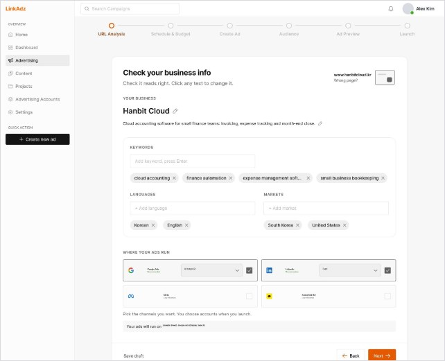
1URL Analysis

2Schedule & Budget
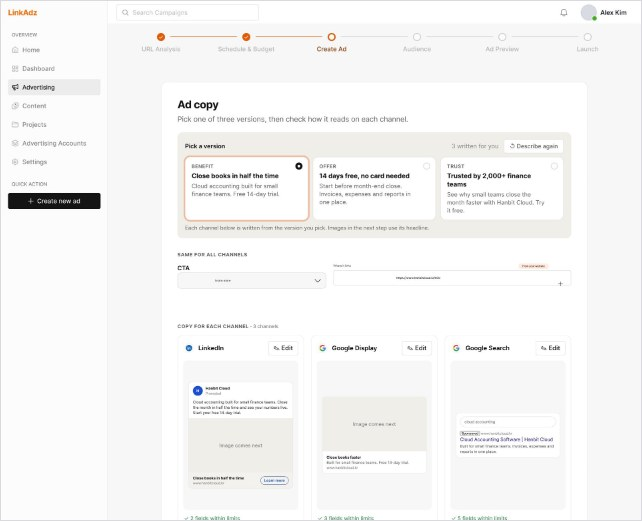
3Create Ad

4Audience
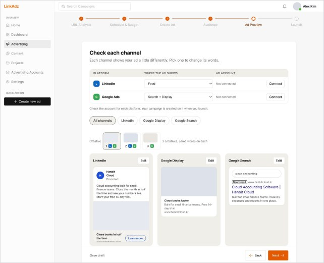
5Ad Preview
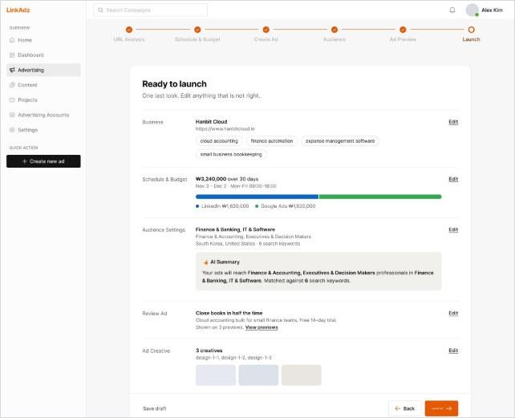
6Launch
03
Design each step
For each step: the old problem, my decision, and the reason.
The 6 steps live in the folder below. Open it to read each step. The steps that changed the most are told in detail. Tap Before / After to compare, and tap an image to zoom in.
01 · URL AnalysisPaste one URL02 · Schedule & BudgetFour parts, two rules03 · Create AdCopy first, then creatives04 · AudienceAI picks, users adjust05 · Ad PreviewCheck each channel06 · LaunchOne last look6 stepsURL Analysis → LaunchOpen
02 · Schedule & BudgetFour parts, two rules03 · Create AdCopy first, then creatives04 · AudienceAI picks, users adjust05 · Ad PreviewCheck each channel06 · LaunchOne last look6 stepsURL Analysis → LaunchOpenHover to peek. Click a file to open that step.
Step 1 · URL Analysis · URL entry screen
The first screen now has one job: paste a URL
Before. Besides the URL field, this screen had a card showing the channel connection status and a card introducing the 5 things the AI will do. In the behavior tracking tool, I saw that users on this page often clicked around the cards, got distracted, and lost focus on the main flow: pasting a URL.
My decision. Remove the distracting cards and keep only the URL field with one clear question: "What would you like to advertise?". Connecting channels moves down to the Launch step. I also added a Recent chip to pick a website used before.
Why. New users do not need to know which channels are connected before they have created an ad. The fewer things there are to read on the first screen, the faster users get started.
URL Analysis · 4-step flow

URL Analysis · URL entry

Step 1 · URL Analysis · result screen
The AI result is something to read and edit
Before. This step ended with a "fit score" and a list of channels suggested by the AI. Users could not change anything, and sometimes the system scanned the wrong website.
My decision. Business name, description, keywords, languages and markets can all be edited in place. The "Wrong page?" button in the top corner takes users back to the first screen to change the website, in case the system scanned the wrong one.
Why. An AI result is rarely fully right. Letting users edit gives them a sense of control, as Microsoft's HAX Toolkit and Google's PAIR Guidebook recommend.
URL Analysis · 4-step flow

URL Analysis · check your business info
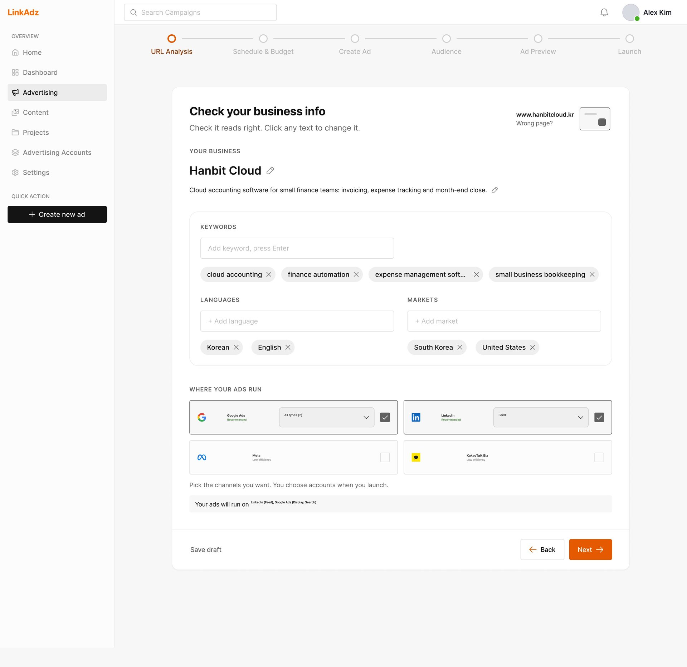
Step 1 flow: analysis, result and errors
Analysis can fail in seven ways. Each one shows as an alert under the URL field, with a clear way out: fix the URL, try again, or wait until credits are available.
View user flow
- LandingEnter a URLOr tap a Recent chip to fill it in
- Press Analyze
- LoadingPage scan and progress
- Analysis succeeded?
- Errors · alert under the URL field
- NoFix the URLPage not found, Page cannot be read, Login requiredLogin required opens a dialog. Then back to Enter a URL
- → Enter a URL
- Try againTimeout, Server error, OfflineThe URL is kept: press Analyze again
- BlockedOut of creditsNo analysis until credits are available
- YesResultCheck the business infoName, description, keywords, languages, markets
- Result · check the business info
- Right website?
- NoWrong page?Change the websiteGoes back to Landing
- No
- YesEdit the info inline
- Pick channelsOne card per channel
- Channel supported?
- NoCard disabledCannot be pickedPick another channel
- No
- YesTick the channelThe ad type dropdown shows and the summary bar updates
- At least 1 keyword?
- NoNext lockedAdd at least one keywordAdd a keyword and Next unlocks
- No
- YesNextGo to Step 2
Tap to open the full diagram
Step 2 · Schedule & Budget
One long page, split into small decisions
Before. Schedule, budget, platform settings and audience all sat together on one very long Set Ads page.
My decision. The audience part is split out into its own Step 4. Step 2 now has only schedule and budget, and its parts appear one after another: Duration, Schedule, Budget, then Review. The budget screen suggests three tiers, and the budget split by channel only shows after Budget is chosen.
Why. New users do not see every field at once, and each screen has only one action. This follows the "one thing per page" principle from GOV.UK Design System , and progressive disclosure by Nielsen Norman Group.
Set Ads · one long page
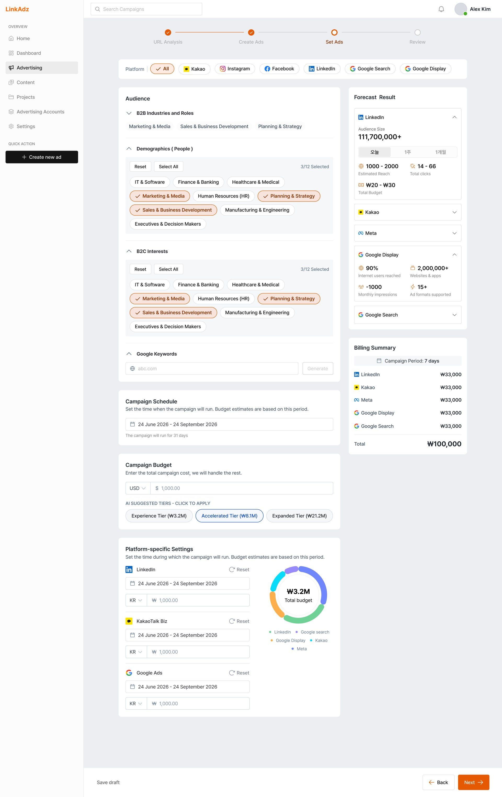
Step 2 · Schedule & Budget

How Step 2 appears
One question at a time. Tap Next and the next part appears. The last one is a Review screen to check and edit each line.
Duration: how long it runs
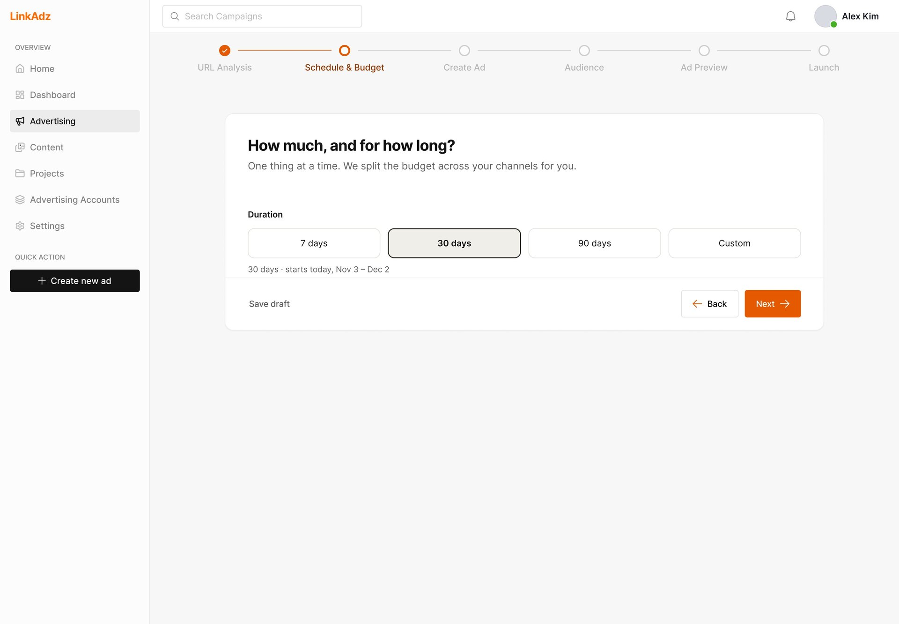
Schedule: which hours it runs
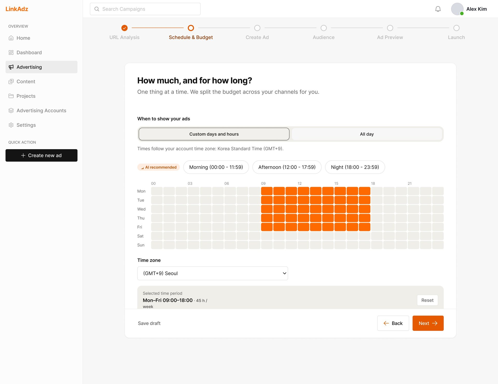
Budget: not chosen yet, Next locked
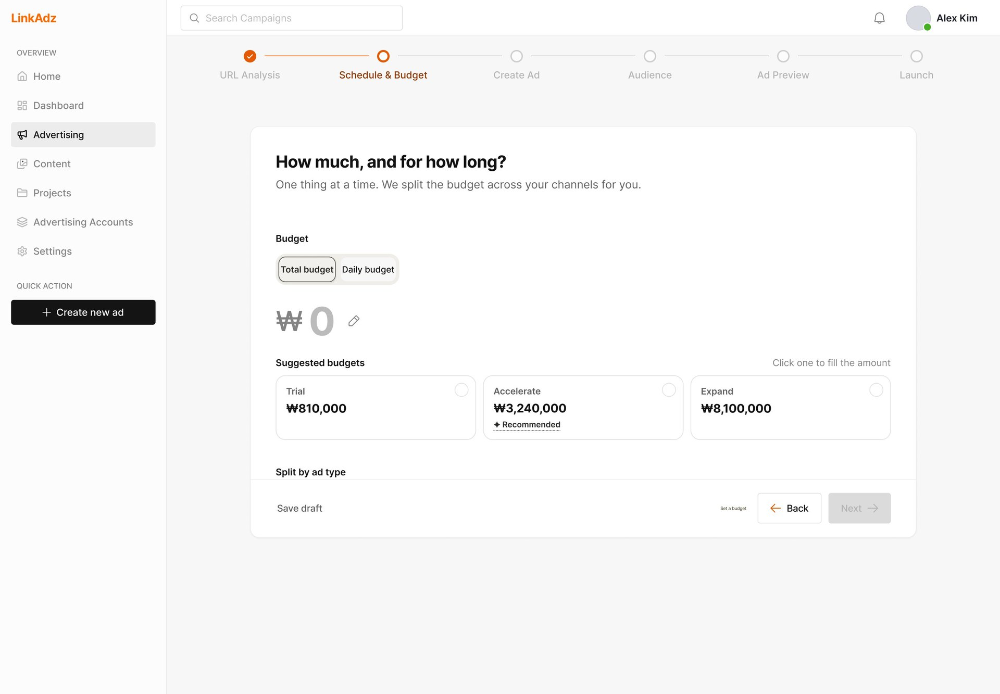
Budget: chosen, split shown

Review: check and edit
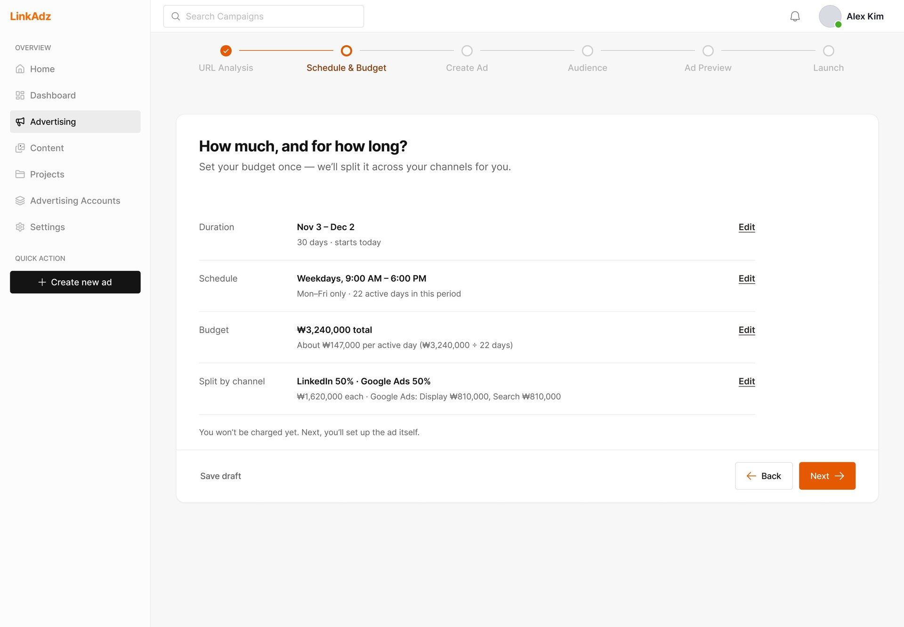
Step 2 flow: four parts, two rules
Schedule and Budget each have a rule that unlocks Next, and the hint names the exact problem. Every change autosaves.
View user flow
- NextFrom Step 1
- 1/4 · Duration
- Pick 7, 30 or 90 days, or Custom
- Custom?
- No7, 30 or 90 daysStarts todayDate fields are hidden
- → All day, or Custom days and hours
- No
- YesCustomA calendar opens to pick a start datePast dates are disabled
- End date is optionalNone picked: runs Ongoing until stopped
- 2/4 · Schedule
- All day, or Custom days and hours
- All day, or at least 1 hour?
- NoNext lockedSelect at least one hourA cell or a preset (Morning, Evening, Night) unlocks Next
- No
- 3/4 · Budget
- YesPick Trial, Accelerate or ExpandAccelerate is recommended. Or type a total
- Total within the allowed range?
- NoNext lockedMinimum total is ₩…, or Maximum is ₩50,000,000Below the minimum, no tier card is selected
- No
- YesEach channel at its daily minimum?
- NoNext lockedMinimum daily ₩…/dayThe channel box turns red
- No
- 4/4 · Review
- YesSummaryDuration, schedule, budget and split by ad type. Edit on a row goes back to that sub-step
- Continue to Create AdGo to Step 3a
Every change autosaves. The Next label changes with each sub-step.
Tap to open the full diagram
Step 3a · Create Ad, part 1
Ad copy comes first, so the whole flow knows what the campaign is about
Before. The old flow had no copy part. The content came from the URL scan, so it was fairly generic, and users had to choose how to create the ad before they knew what they wanted to say.
My decision. Create Ad starts with a prompt box: users describe what they want to advertise, for example an offer or a holiday season, or leave it empty to use the website content. The website from Step 1 is already attached in the box, with a few suggested prompts taken from the website itself. The AI writes three versions. Users pick one, set the CTA and the link once for all channels, then check the copy on each channel.
Why. Simple, but it still has to give good results, not only get the ad running. This box also tells the app what the campaign is about, so Step 4 can suggest a fitting audience.
Create Ads · choose how to create
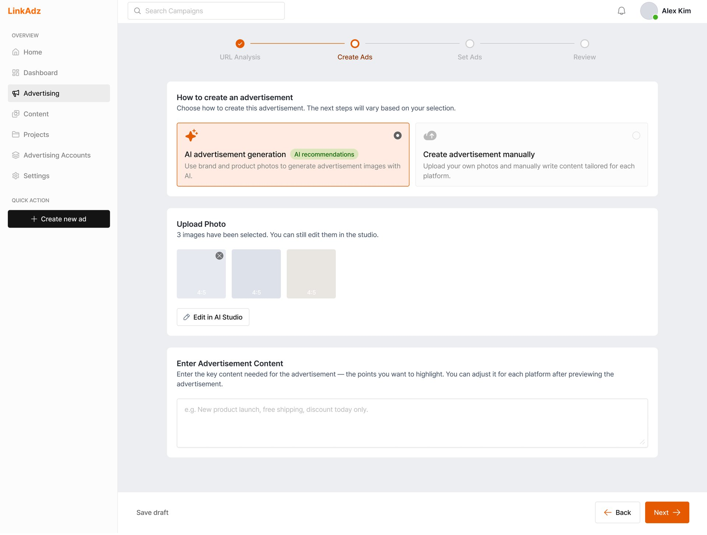
Step 3a · prompt box

Step 3a, from the prompt box to the ad copy
Users describe what they want to advertise, or pick a suggested prompt. The AI writes three versions, and users pick one and check it on each channel.
Empty prompt box
Prompt filled

Writing the ad copy
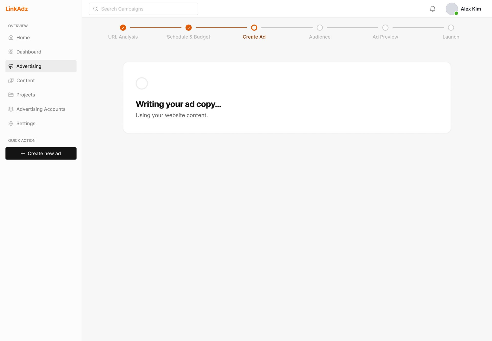
Pick one of three versions

Copy over the limit: Next locked
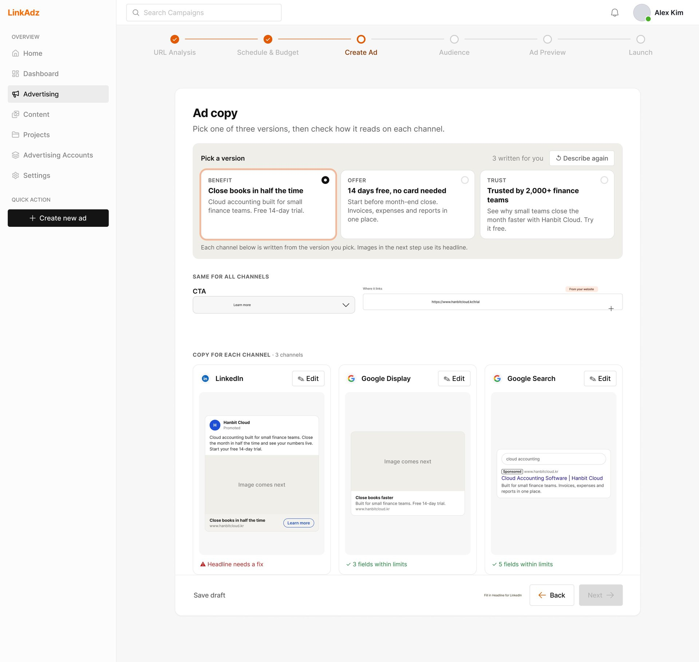
Edit the copy for one channel

Step 3a flow: prompt, result and ad copy limits
Next stays locked until there is a prompt, a valid link, and copy within every channel's limit. Editing one channel's copy never changes the others.
View user flow
- Continue to Create AdFrom Step 2
- IdleWhat do you want to advertise?Prompt box, website chip, topics from the website, suggested prompts
- Fill the promptTap a topic chip (Promo, Halloween, Sale), pick a suggested prompt, or type your own
- Prompt has content?
- NoNext lockedDescribe your ad, then press Create ad copy
- No
- YesPress Create ad copy
- LoadingWriting your ad copyOne screen, footer hidden
- Result · pick a version, then check each channel
- ResultPick one of three versionsBenefit, Offer or Trust. Describe again goes back to the prompt
- Same for all channelsCTA (default Learn more) and Where it links (URL)
- Link valid?
- NoNext lockedFix the link where your ad goes
- No
- YesOne card per channelPreview, Edit, and N fields within limits
- Edit popup · changes one channel only
- EditEdit LinkedIn copyFields with counters (137/150, 28/70) and a live preview
- Cancel with unsaved changes?
- NoThe popup closes at once
- No
- YesDiscard your changes to LinkedIn?A confirm dialog asks first
- Any field edited?
- NoSave lockedTooltip: No changes yet
- No
- YesSaveCloses the popup and the channel card updates. Reset to AI version appears
- Every field within its limit?
- NoNext lockedHeadline needs a fixHintFill in Headline for LinkedIn
- No
- YesNextGo to Step 3b
Tapping the selected suggestion again clears the prompt. × on the website chip: website content is not used. + adds a reference image.
Character limits differ by platform.
Tap to open the full diagram
Step 3b · Create Ad, part 2
AI Studio, image upload and video upload share one UI
Before. Users had to choose first between "AI creates" and "upload your own". The two ways had different interfaces and sat on one long page together with the ad content.
My decision. Creatives come after, once the copy is done. The three sources look the same, from panel to popover to modal. Each design made by the AI is labeled with the channels that fit its size. There are new loading states for when the AI creates images and when users upload.
Why. Learn once, use for all three sources. The channel labels tell new users right away which image runs where.
Create Ads · AI Studio

Create Ads · upload your own image
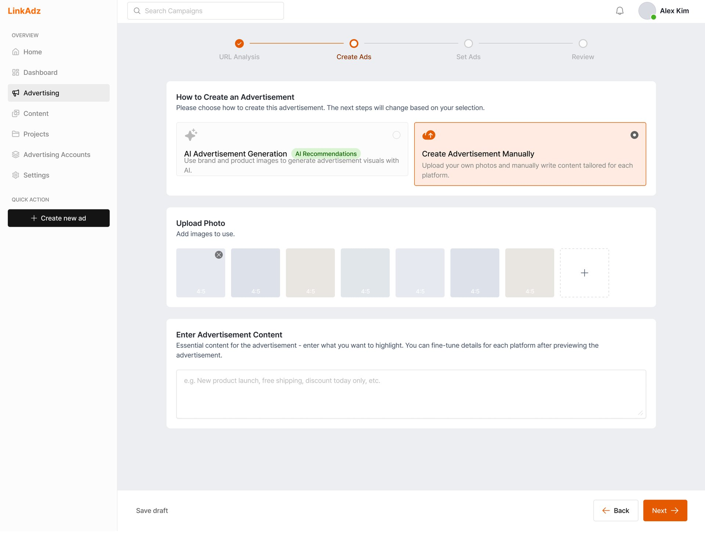
Step 3b · AI Studio

Step 3b · AI Studio
Users choose how to add a creative, adjust the image settings, then press Generate. If creating fails, Try again keeps the same prompt.
Choose how to add a creative

AI Studio, empty
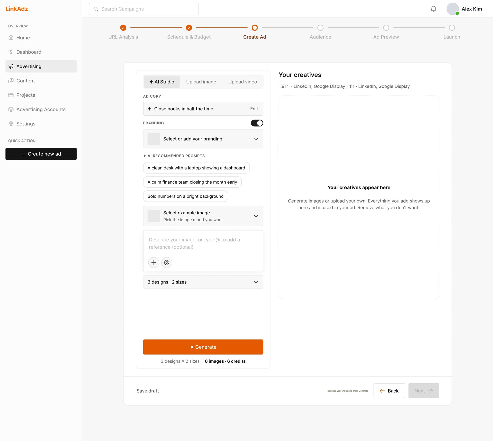
Image settings popover

The AI is creating
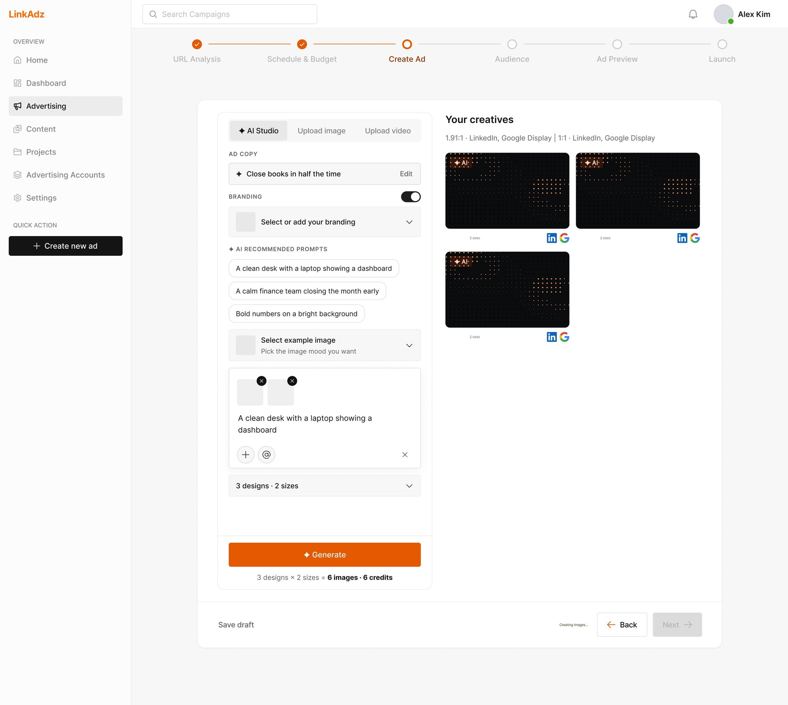
Results, labeled with channels

Generate failed

Step 3b flow: AI Studio
Users choose AI Studio or Upload. In AI Studio they set branding, examples and a prompt, then Generate. If generation fails, Try again keeps the prompt.
View user flow
- NextFrom Step 3a
- DialogHow do you want to add your creatives?
- Which way?
- UploadUpload image or Upload videoSee the upload flow below
- Upload
- AI Studio · left panel
- AI StudioBrandingThree statesNo brand: opens the picker. Selected: brand card with Change and ×. Off: brand not applied
- Example imageOptional, up to 3 imagesEach with ×, counted n/3
- Prompt boxDescribe the creative+ attaches an image. @ inserts one as an inline chip
- Attach a reference image
- +Tap + to attach an image
- Already 5 references?
- YesToastUp to 5 references
- Yes
- NoThumbUploading
- Image valid?
- NoThumb errorWarning iconTap × to remove it
- No
- YesThe thumb sits on the prompt box
- Generate · right column, Your creatives
- Press GenerateFixed footer, for example 6 images · 6 credits
- GeneratingA Creating cardWith a dot-wave effect
- Created?
- NoGenerate errorCouldn't createWith Try again and ×
- ×Removes the error card
- Try againRuns Generating again with the same prompt. Still failing after about 30 seconds: the error shows again
- No
- YesResultsCreative cards with an AI labelx/10 in this ad. Tap a card to open Image detail
The line 3 designs · 2 sizes opens the Image settings popover.
Tap to open the full diagram
Step 3b · Image and video upload
Upload uses the same layout as AI Studio: panel on the left, creatives on the right. Images are cropped automatically for each size, and users adjust them if needed.
Upload image

Image detail: auto-cropped by size
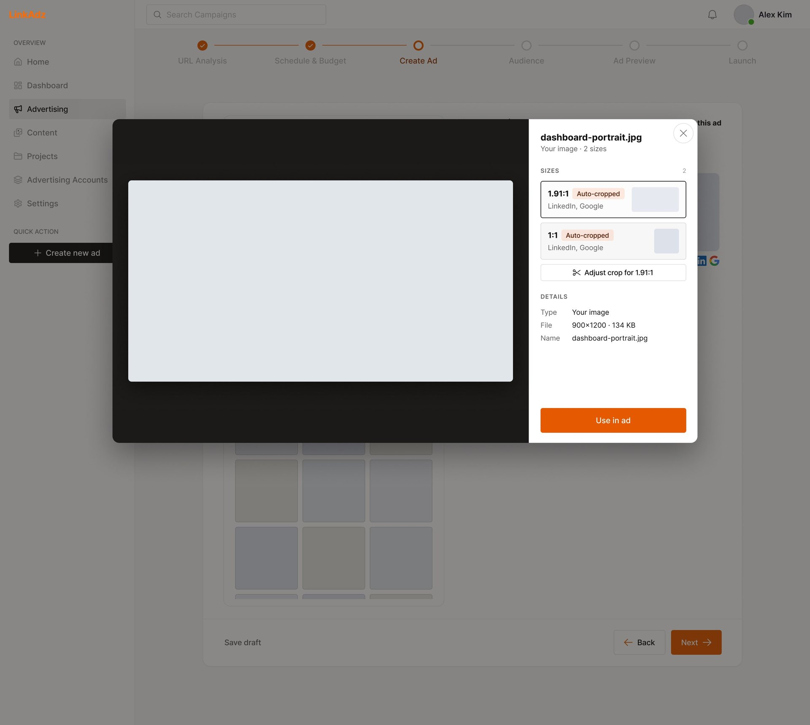
Adjust the crop

Upload video
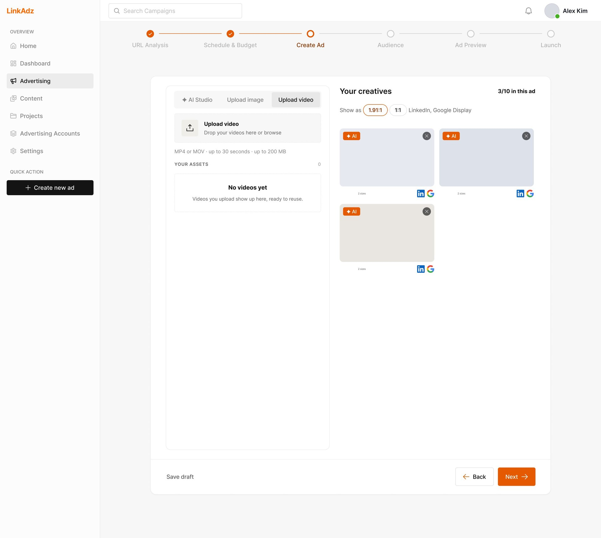
File rejected

Upload failed
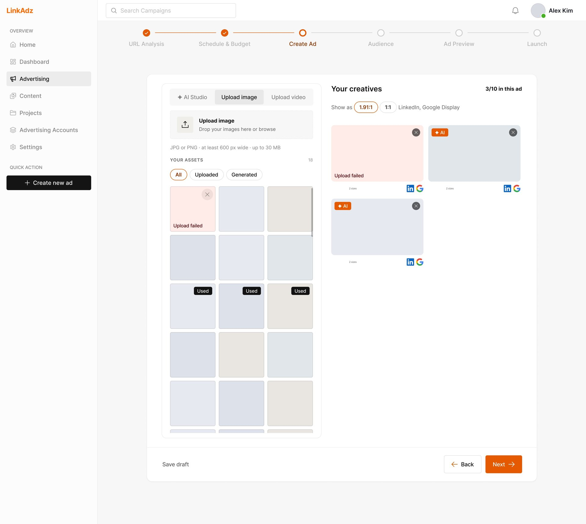
Google does not use video: Next locked

Step 3b flow: upload, assets and crop
Upload errors show in two places, the dropzone for a bad file and the tile for a failed upload. Next unlocks once one creative works on every channel of the ad.
View user flow
- Upload
- Which tab?
- VideoVideo tabMP4 or MOVUp to 30 seconds, 200 MB
- Ad has a Google channel?
- No→ Drag a file in
- YesDropzone disabledNot available for this channelNext is locked
- Video
- ImageDrag a file inDrag over, then Drop to upload. Image tab: JPG or PNG
- File valid (format, size)?
- NoDropzone errorUpload failedUse JPG or PNG, up to 10 MB
- No
- YesTileUploadingBorder beam. Video shows Processing
- Upload succeeded?
- NoTile errorUpload failed and ×Delete it and upload again. There is no Retry
- No
- YesThe tile joins Your assets
- Your assets · image detail and crop
- Your assetsFilter chips: All, Uploaded, Generated. Empty: No assets yet or No videos yet
- Tap the tile bodyOpens Image detail
- Already in the ad?
- YesIn adButton: Remove from ad
- Yes
- NoNot in adButton: Use in ad
- Adjust cropDrag the crop frame for each size, then Save crop. A size can be tagged Low res or Auto-cropped
- Hover or focus a tileA + button adds it quickly. An added tile shows Used
- A creative that works on every channel?
- NoNext lockedNo creative fits every channelFor example, only a video while the ad has a Google channel
- No
- YesNextGo to Step 4
Up to 10 creatives in one ad (x/10 in this ad).
Tap to open the full diagram
Step 4 · Audience
The AI pre-selects the audience, and users adjust it
Before. Audience sat on the same Set Ads page. New users had to pick industries, job titles, interests and keywords from long lists, when they lacked the knowledge to choose.
My decision. Audience becomes its own step, placed after Create Ad. The AI pre-selects the audience based on the ad copy and the website, with a one-line summary of "who will see your ad". Every tag can be edited. Next unlocks when there is an industry or a job title, and at least one search keyword.
Why. New users do not start from zero. Because the ad copy already exists from Step 3a, the AI's suggestions fit the campaign better.
Set Ads · audience part
Step 4 · Audience

How Step 4 appears
The AI reads the ad copy and the website, writes a one-line summary of the audience, then pre-selects tags for users to adjust.
Loading

The summary types out gradually

Result: pre-selected by the AI

Next locked: missing a search keyword

Step 4 flow: AI picks, users adjust
The AI picks the audience while the screen loads, then users adjust it. Next unlocks only with a search keyword and at least one industry or role.
View user flow
- NextFrom Step 3b
- LoadingAI is picking your audienceThe mascot walks 5 timed stops, about 8 seconds. AI Suggest and Next are locked
- Typing revealThe summary types outWith the tag AI picked this audience
- ResultThe summary and 4 chip groupsEvery change autosaves
- AI SuggestRuns the suggestion again and goes back to Loading
- Adjust the audience
- Google search keywordsType one keyword or paste a comma-separated list, then + Add
- Ideas8 suggestions to pick fromGenerating disables the button. Picking: 3 added, 5 still open
- Already 100 keywords?
- YesLimit reached 100/100Nothing more can be added
- Yes
- NoMany keywords collapse to 2 rowsShow all 43 / Show less
- Edit the chipsB2B industries and roles, Demographics, B2C interests: tap a chip to add or remove it. Demographics has Deselect all
- When Next unlocks
- At least 1 search keyword?
- NoNext lockedAdd at least one search keyword
- No
- YesAt least 1 industry or role?
- NoNext lockedA hint for industry or roleShown only once a keyword exists
- No
- YesContinue to Ad PreviewGo to Step 5
Tap to open the full diagram
Step 5 · Ad Preview
Check each channel in one place
Before. The preview was a series of ad cards, one per platform, in uneven sizes.
My decision. List each platform with where its ad shows and its ad account, and add a creative picker to review them all at once. The channel cards are aligned to the same size.
Why. Users see every channel in one go, with no card so small or so big that it pulls attention off balance.
Preview · one card per platform

Step 5 · Ad Preview

Step 5 · states
Each channel connects on its own, so one failing channel does not block the others.
Pick a creative to preview

Edit the ad of one channel

Creative detail

Connecting a channel
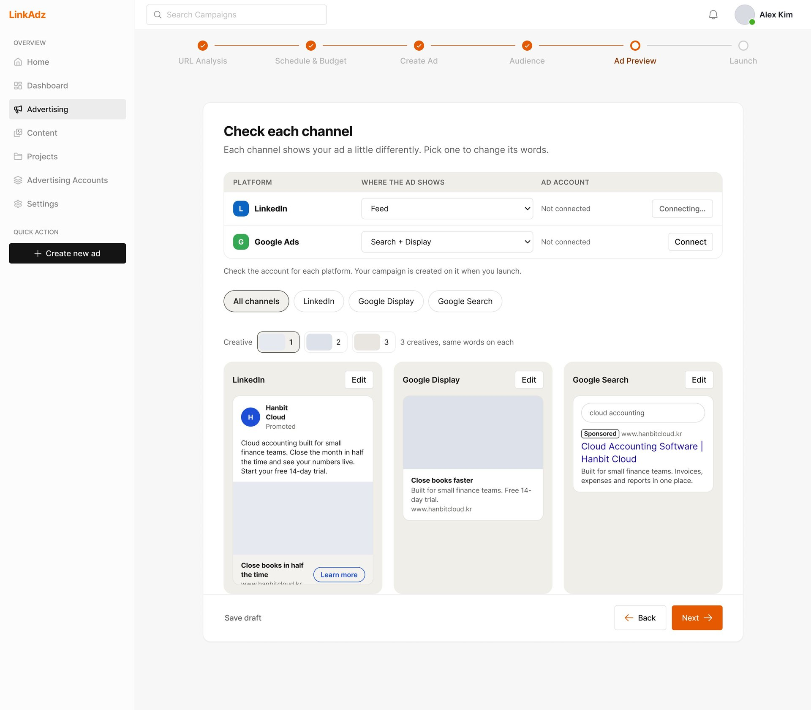
Connection failed

Step 5 flow: check, connect and edit
Each channel connects on its own, so one failed connection does not block the others. Next is always clickable here, and the connection check happens again at Launch.
View user flow
- Continue to Ad PreviewFrom Step 4
- Check each channelA table with Platform, Where the ad shows and Ad account. Tabs: All channels, LinkedIn, Google Display, Google Search
- Connect each channel's ad account
- Channel connected?
- NoNot connectedShows a Connect button
- Press ConnectConnecting… The button is disabled for about 700 ms
- Connected?
- NoConnection failedRed text. The button becomes Try again
- Try againRepeats Connecting. Other channels connect on their own
- → Press Connect
- No
- YesConnectedThe Ad account dropdown replaces the button
- No
- YesAd account dropdownFor example a company page, no tick
- Edit ad popup · one channel only
- EditEdit LinkedIn adIntro text 137/150, Headline 28/70, creative picker
- Show asChips 1.91:1 and 1:1 (the platform has two ratios), a square tile grid with 3 columns
- Tap a tileApplies it to the preview on the right, with a tick. AI tiles carry an AI label
- SaveCloses the popup and the channel preview updates
- Hover a tileAn expand button opens the Detail modal
- Detail modalOver the popup: large image, size, Runs on, details
- Crop dialogThe top layer. Esc closes the top layer first
- NextGo to Step 6Always clickable, even when no channel is connected
- Creatives
- Creative chips 1, 2, 3Three creatives, the same content on each channel
- Pick creative 3The LinkedIn card shows as unused
The Where the ad shows dropdown is always visible, connected or not.
Tap to open the full diagram
New · Step 6
Launch: one last look
One summary of the business, schedule and budget, audience, ad copy and creatives. Each part has an Edit button to go back and fix it before launching. After launch there is a result screen, so users know where the campaign stands.
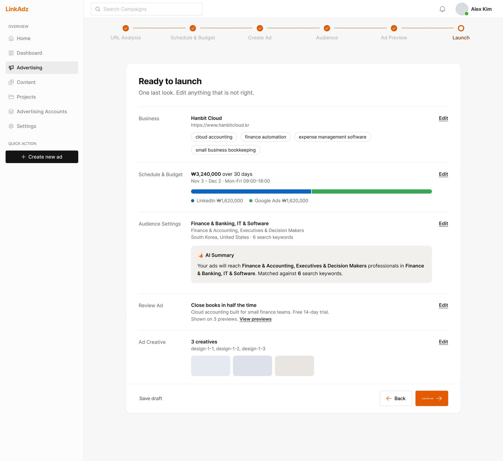
Step 6 · states
If a channel is not connected yet, a modal asks users to connect it before launch. After launch, users see each channel being submitted.
Choose where ads run
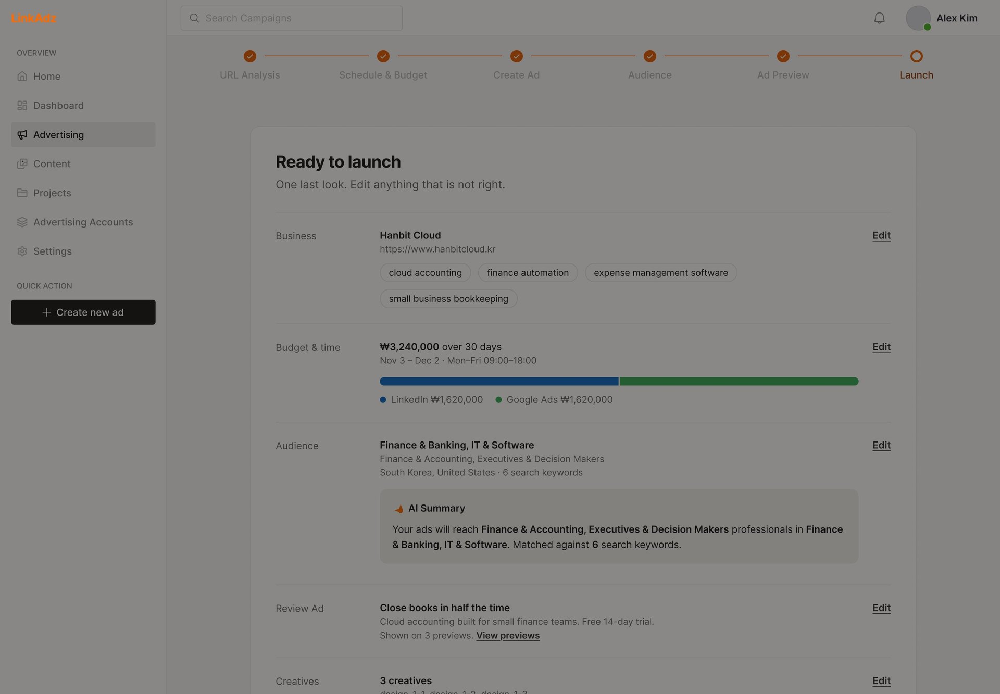
Connection failed in dialog

Launching

Campaign submitted
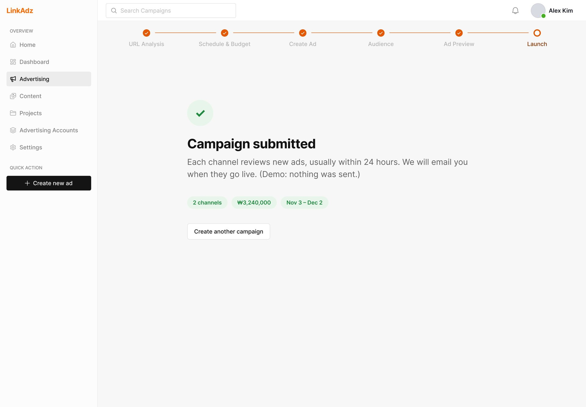
Step 6 flow: launch
If every channel is connected, launching starts at once. If not, a modal asks users to connect the missing channels first, and Launch stays locked until all are connected.
View user flow
- NextFrom Step 5
- Ready to launchOne last lookA summary of Business, Budget and time, Audience, Ad, Creatives
- Edit, or View previewsEdit on a row goes back to that step. View previews shows 3 previews of the ad
- Press Launch campaign
- Every channel connected?
- Modal · Where should your ads run?
- NoOne row per channelLogo, name, Not connected, Connect
- Cancel, or click outsideCloses the modal, back to Ready to launch
- Press ConnectConnecting… Disabled for about 700 ms
- Connected?
- NoConnection failed. Try again.The button becomes Try again. Other channels keep their own state
- No
- YesConnected rowTwo dropdowns: Where ads show, Ad account
- Every channel connected?
- NoLaunch lockedFaded 50%Pressing it shows the toast Connect each channel first
- Yes→ Keep this tab open
- No
- YesLaunching your campaignKeep this tab openEach channel in turn (850 ms): Creating ads, then Submitted. The progress bar rises to 100%
- DoneCampaign submittedEach channel reviews the ad, usually within 24 hours, with an email when live
Launching hides the stepper and footer. On Campaign submitted the stepper shows every step done.
Tap to open the full diagram
04
Feedback → decision
Feedback is not applied as is.
After the 6-step version, the CTO, the Director and the FE dev kept giving feedback. For each point, I weighed the UX first, then brought my reasons and an alternative to the discussion, instead of just agreeing or rejecting.
Feedback · CTO
After editing the business info inline, show a text button "Save" for users to tap to save.
My proposal
Enter to save, click outside to save automatically (Saving → Saved), Esc to cancel. No Save button.
Why
Saving/Saved at the end of the field is a status, not a button to press. The saving has already happened on Enter or click outside, so adding a Save button only creates an extra action. The description is limited to 120 characters, so a one-line field is enough.

Feedback from the FE dev: big screens have wasted space
Problem
The card was fixed at 960px on every step. At 1920px there is about 360px of wasted space on each side, and on a laptop 864px tall, Step 3b has to scroll.
One rule instead of every screen size
Card = min(100%, max(960, 5/6 of the content area)), workspace up to 1600px, auto-fill grid. The 1440px size stays the same, so the 193 existing frames do not need to be redrawn.
Trade-off accepted
There is no 1920 frame in Figma, so the developers read the rule from the annotations. I also built an interactive demo (1024–2560 wide) for the developers and QA to check.
The rule applied at each screen size
The 1440px size stays as it is in Figma. Smaller screens shrink the card. Larger screens stretch it and the grid adds columns, up to 1600px.
05
Designing for when things go wrong
Each step has one rule to move on, and one sentence saying what to fix.
I ran the flow myself and found cases the first design did not cover: analysis errors, out of credits, budget below the minimum, and a failed channel connection. Each case was added as its own screen in Figma (these screens sit inside each step in section 03), with a user flow so the developers know exactly what to build.
Each step has a rule to move on
Each step ends with a Next button. Next stays locked until the step is valid, and a hint tells users what to fix, so nobody is left guessing why they cannot continue.
View user flow
- 01URL Analysis
- Next unlocks whenAt least 1 keywordHint while lockedAdd at least one keyword
- 02Schedule & Budget
- Next unlocks whenValid run time and budgetHint while lockedNames the error: time, minimum or maximum budget
- 03aAd copy
- Next unlocks whenCopy within the limit of every channelHint while lockedHeadline needs a fix
- 03bCreatives
- Next unlocks whenA creative that works on every channelHint while lockedFor example, Google does not use video
- 04Audience
- Next unlocks whenAn industry or role, and a search keywordHint while lockedAdd at least one search keyword
- 05Preview & Connect
- No rule hereNext is always clickableThe connection is checked again at Launch
- 06Launch
- Launch unlocks whenEvery channel is connectedHint while lockedConnect each channel first
- DoneCampaign submittedAds are created for each channel
A No on any step means staying on that step. Fix it and Next unlocks again.
Tap to open the full diagram
One case: images with many ratios break the grid
When I tried real uploaded images, the creative cards sat unevenly because each image had a different ratio. Instead of patching each case, I wrote one rule: the frame is always 16:9, the image is shown as contain and centered, and the empty space shows the frame's background color. The corner radius, the delete button and the AI label belong to the frame, so they always stay put whatever the ratio.

06
Design system: built once, used on every screen
Every screen above is assembled from one Figma library, so a change to a token or a component reaches all of them.
What it holds. 12 variable collections, 77 component sets with 1,671 variants, 34 text styles and 76 colour styles. I built the variables and components for the whole app, not only for this flow.

Tokens that point to the layer before them
Colour goes through four layers: Global Colors, Base Colors, Mode Colors (Light and Dark) and Components Color. A component never holds a hex value. Changing the brand colour, or switching to Dark, updates every component without opening a screen. Type works the same way: one text style switches between Desktop and Mobile through the Typography Configuration collection.

Variants instead of redrawing
Each component carries its size, state and hierarchy as variants, so a screen picks a combination instead of drawing one. This is what let me add the error, loading, locked and empty states across all six steps without inventing new buttons. The Stepper is one component with a variant per step.

From small parts to features
Components roll up in three tiers: UI components (46 sets), cards and modules (22) and features (9). The Creative Source Panel, the Campaign Card and the audience selector are built from the same buttons, inputs and badges you see above.
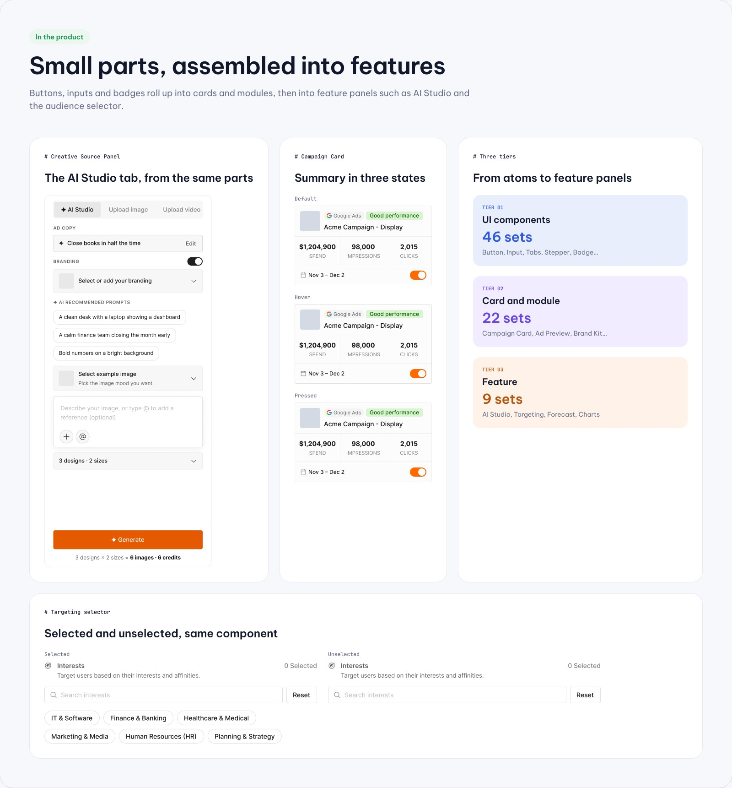
One frame for every creative
The Creative Source Panel adds images, videos and AI results, the Creative Card shows them, and the Media Tile is the small version in the asset grid. Each has default, hover, pressed, focus, uploading and error states. The AI label is a boolean on the card, not a variant per source.
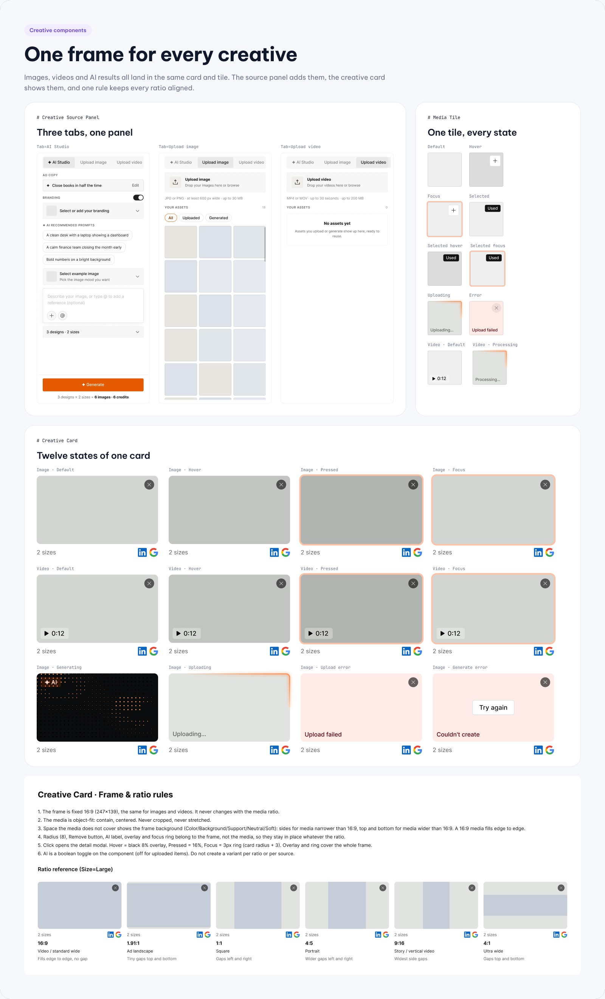
How the app waits
AI work takes seconds, so every wait is a component with its own states: a page scan that shows what the AI is reading, rows that tick off, a dark dot wave while AI creates, and an orange border beam while a file uploads. The dot wave and the beam are one Loading Frame component with 12 phases.

07
Status and how I measure
The 6-step flow launched for all users on 28 Oct 2026.
When I was preparing this portfolio, too few users had used the new flow to draw conclusions, so I have not put result numbers here. Instead, here is how I will measure it, against the baseline in section 01:
01First campaign launch rate
Of the people who start, how many reach Launch.
02Time to launch
Compared with the 21.5-minute median of the 4-step flow.
03The step where users stop most
To know which step to work on next.
04Same filters as the first baseline
Same launch event, test accounts removed, measured after 4–6 weeks.
What I learned
- Fewer steps are not always easier. What matters is that in each step users only have to decide one thing.
- I order steps by how users feed information to the AI, not only by how ad platforms are structured.
- Testing an idea on an HTML prototype before Figma means faster fixes and less waste.
- One well-written rule (responsive, tokens, creative frame) works better than redrawing every screen.
- Good feedback is not always followed as is. I explain with UX reasoning and offer a better option, which keeps everyone aligned.